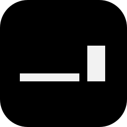

> always on top
Notes float above every other window, so whatever you're writing down never gets buried. You can turn it off in ⚙.

notrno notes open.
Notes float above every other window, so whatever you're writing down never gets buried. You can turn it off in ⚙.
Every keystroke is saved. Close notr and it comes back with the same notes, in the same places.
A new note slides in right next to the one you're in. It never lands on top of another note.
Add, delete, switch, resize and move notes without touching the mouse.
⚙ → shortcuts writes them into the note. Change a key by editing the text.
It starts quietly at login and waits in the tray until you need it.
/line + enterApple Silicon and Intel
download .dmgOn first open, go to System Settings → Privacy & Security → Open Anyway.